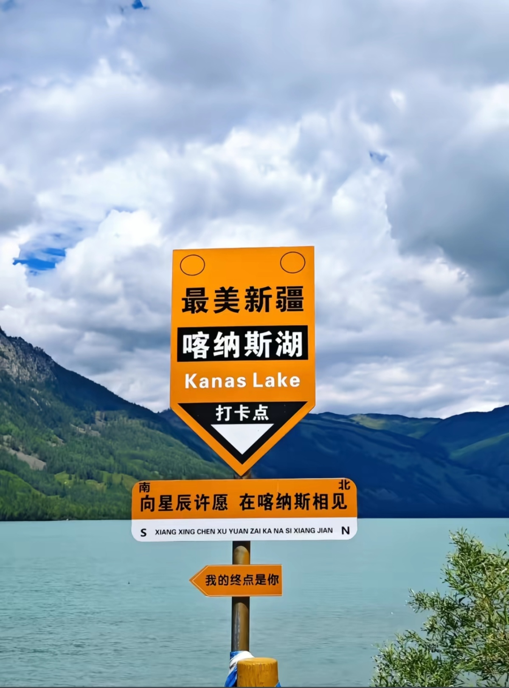
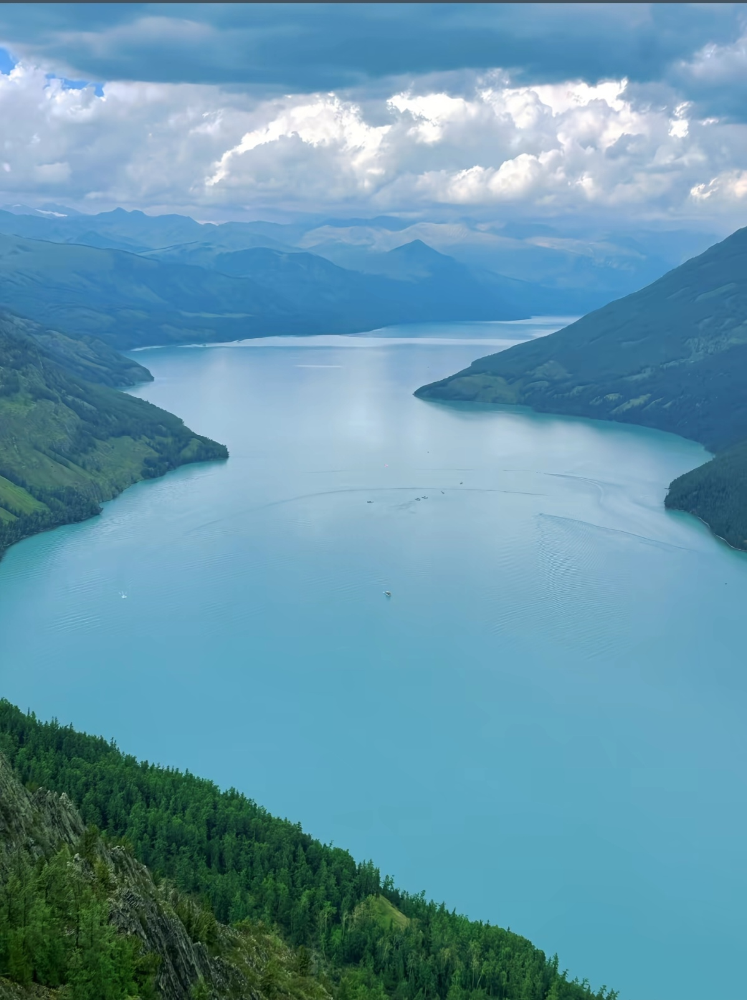
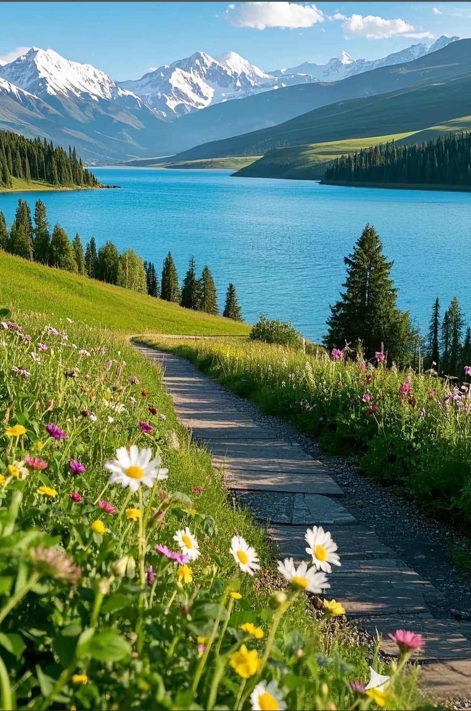
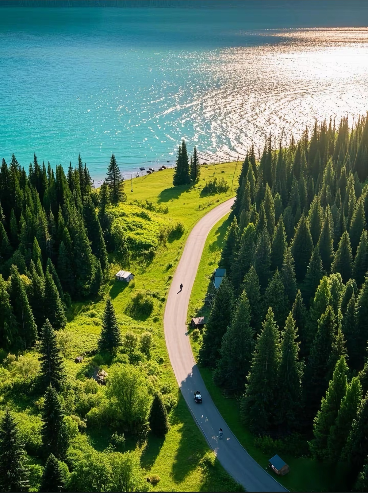
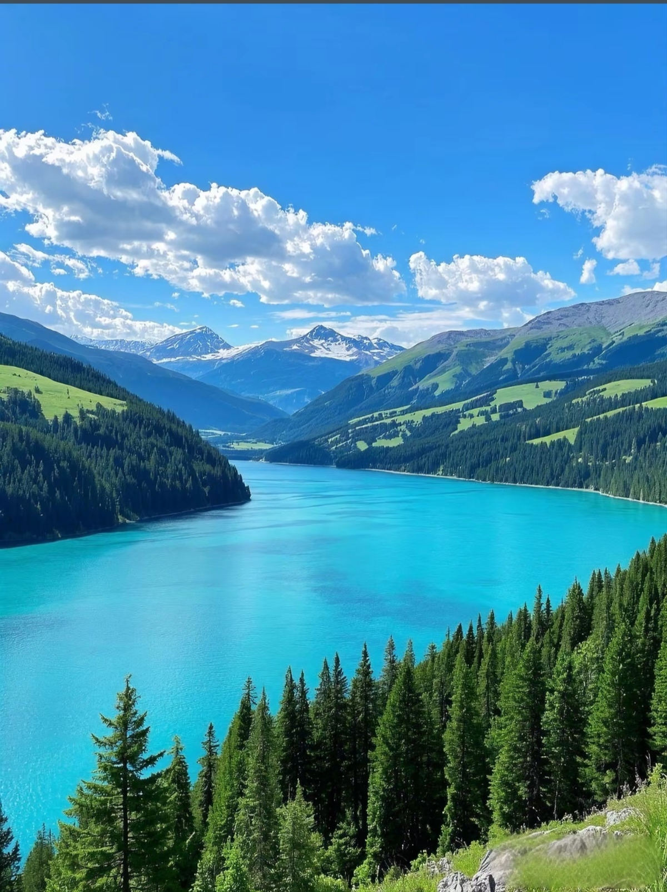
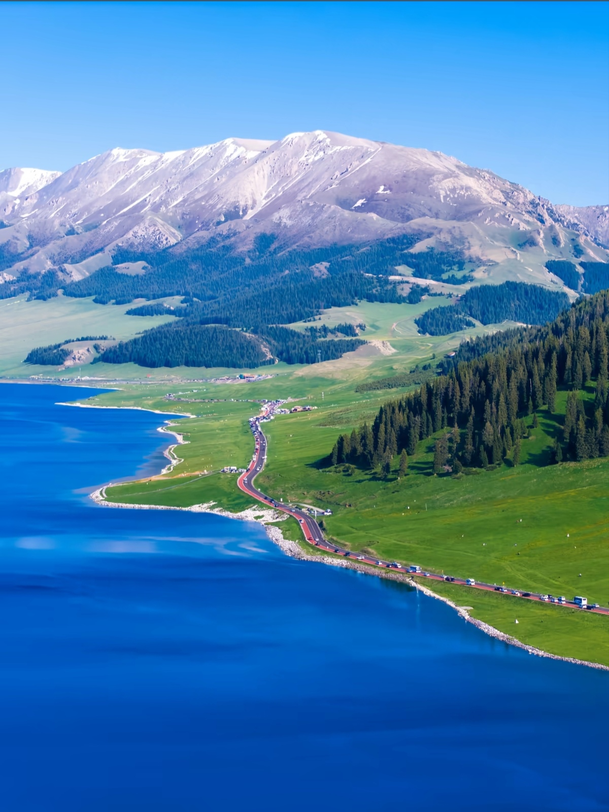

Kanas Lake is a stunning alpine lake in the Altai Mountains of northern Xinjiang, near the borders of Russia, Kazakhstan, and Mongolia. The lake is famous for its color-changing waters — shifting from blue to green to silver depending on the weather and season — and local legends of a mysterious lake monster. Surrounded by dense taiga forests, snow-capped peaks, and Tuva Mongolian villages, Kanas is often called "God's Backyard Garden." The area is home to the Tuva people, an ethnic minority with unique culture and traditions. Autumn (late September to early October) is the most spectacular season when the forests turn brilliant gold and red.






Fly to Burqin: Kanas Airport (seasonal, Jun-Oct). Flights from Urumqi (1h, ¥800-1200). Airport to Kanas: 2h drive (taxi ¥300-400).
Altay Airport: Flights from Urumqi (1h, ¥600-900). Then drive to Burqin (2h) and Kanas (3h more). Total 5h drive.
Distance: 700km (10-12h drive). Route: Urumqi → Karamay → Burqin → Kanas. Mountain roads, some rough sections. 4WD recommended.
Park Bus: Included in entrance fee. Runs between all major stops (Kanas Lake, Moon Bay, Dragon Bay, Fairy Bay). Private cars not allowed inside.
Route: Enter park → Bus to Kanas Lake → Lakeside walk → Observation platform → Three bays (Moon, Dragon, Fairy) → Exit
Duration: 6-8 hours
Best for: First-time visitors
Day 1: Kanas Lake full exploration
Day 2: Drive to Hemu Village (Tuva settlement, 2h) → Explore village → Return
Best for: Cultural experience + nature
Best Spots: Kanas Lake sunrise, Moon Bay sunset, Fairy Bay morning mist, Autumn forest
Tips: Early mornings and late afternoons for best light; bring wide-angle lens
Day 1: Kanas Lake → Hiking trail to White Lake
Day 2: White Lake → Friendship Peak (border area)
Day 3: Return via different trail → Three bays
Location: Inside scenic area (Jiandeng Village)
Specialty: Lamb skewers, Hand-pulled noodles, Milk tea
Hours: 8:00 AM - 9:00 PM
Location: Near Kanas Lake
Specialty: Roasted whole lamb, Yogurt, Naan bread
Hours: 11:00 AM - 9:00 PM
Location: Burqin County (outside park)
Specialty: Big plate chicken, Lamb pilaf, Local fish
Hours: 11:00 AM - 10:00 PM
Location: Inside hotels near park
Specialty: Buffet meals, Higher quality, Western options
Hours: 7:00 AM - 9:00 PM
Location: Near Kanas Lake
Features: Lake views, Modern amenities, Restaurant
Note: Very limited rooms; book months in advance
Location: Jiandeng Tuva Village
Features: Authentic yurt experience, Local food, Cultural immersion
Note: Basic facilities; unique experience
Location: Burqin County town
Features: Comfortable, Full amenities, Restaurants nearby
Distance to Kanas: 2-3h drive
Location: Hemu Village (2h from Kanas)
Features: Traditional wooden houses, Village atmosphere
Note: Great alternative if Kanas is full